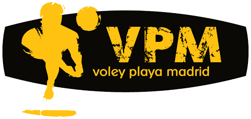

Los puntos, los sets y el cronómetro volverán a cero. Los nombres y colores se mantienen.
Se perderá el partido actual si no ha terminado.
Todavía no hay partidos guardados
Se borrarán todos los partidos guardados.